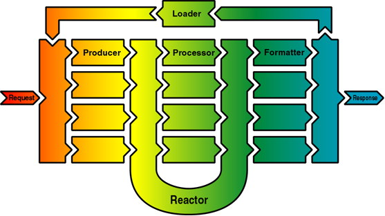

by Stefano Mazzocchi
This document assumes the knowledge of the W3C recommendation or working drafts used in Cocoon (mainly XML, XSL in both its transformation and formatting capabilities). This document is not intended to be an XML or XSL tutorial but just shows how these technologies may be used inside the Cocoon framework to create web content.
Cocoon is a publishing system that allows you to separate web development in three different layers: content, style and logic.
Cocoon does not aim to simplify the creation of web content: in fact, it is harder to create XML/XSL content than it is to use HTML from the beginning. So, if you are happy with the web technology you are using today, don't waste your time and stick with what you already have. Otherwise, if your troubles are site management, if your graphic people is always in the way, if you HTML authors always mess up your page logic, if your managers see no results in hiring new people to work on the site, go on and make your life easier.
This comment posted on the Cocoon mail list shows you what we mean:
I've got a site up and running that uses Cocoon. It rocks, the management loves me (they now treat me like I walk on water), and a couple of summer interns that I had helping me on the project are suddenly getting massively head-hunted by companies like AT&T now that they can put XML and XSL on their resumes. In a word: Cocoon simply rocks!
Every good user guide starts with an Hello World example and since we hope to write good documentation (even if its hard like hell!), we start from there too. Here is a well-formed XML file that uses a custom and simple DTD
<?xml version="1.0"?> <page> <title>Hello World!</title> <content> <paragraph>This is my first Cocoon page!</paragraph> </content> </page>Even if this page mimics HTML (in a sense, HTML was born as a simple DTD for homepages), it is helpful to note that there is no style information and all the styling and graphic part is missing. Where do I put the title? How do I format the paragraph? How do I separated the content from the other elements? All these questions do not have answers because in this context they don't need one: this file should be created and maintained by people that don't need to be aware of how this content if further processed to become a served web document.
On the other hand, we need to indicate how the presentation questions will be answered. To do this, we must indicate a stylesheet that is able to indicate how to interpret the elements found in this document. Thus, we follow a W3C recommendation and add the XML processing instruction to map a stylesheet to a document:
<?xml-stylesheet href="hello.xsl" type="text/xsl"?>Now that our content layer is done, we need to create a stylesheet to convert it to a format readable by our web clients. Since most available web clients use HTML as their lingua franca, we'll write a stylesheet to convert our XML in HTML (More precisely, we convert to XHTML which is the XML form of HTML, but we don't need to be that precise at this point).
Every valid stylesheet must start with the root element stylesheet and define its own namespace accordingly to the W3C directions. So the skeleton of your stylesheet is:
<?xml version="1.0"?> <xsl:stylesheet xmlns:xsl="http://www.w3.org/XSL/Transform/1.0"></xsl:stylesheet>Once the skeleton is done, you must include your template elements, which are the basic unit of operation for the XSLT language. Each template is matched against the occurrence of some elements in the original document and the element is replaced with the children elements, if they belong to other namespaces, or, if they belong to the XSLT namespace, they are further processed in a recursive way.
Let's make an example: in our HelloWorld.xml document page is the root element. This must be transformed in all those tags that identify a good HTML page. Your template becomes:
<xsl:template match="page"> <html> <head> <title><xsl:value-of select="title"/></title> </head> <body bgcolor="#ffffff"> <xsl:apply-templates/> </body> </html> </xsl:template>were some elements belong to the standard namespace (which we associate to HTML) and some others to the xsl: namespace. Here we find two of those XSLT elements: value-of and apply-templates. While the first searches the page element direct children for the title element and replace itself with the content of the retrieved element, the second indicates to the processor that should continue the processing of the other templates described in the stylesheets from that point.
Other possible templates are:
<xsl:template match="title"> <h1 align="center"> <xsl:apply-templates/> </h1> </xsl:template> <xsl:template match="paragraph"> <p align="center"> <i><xsl:apply-templates/></i> </p> </xsl:template>
After the XSLT processing, the original document is transformed to
<html> <head> <title>Hello</title> </head> <body bgcolor="#ffffff"> <h1 align="center">Hello</h1> <p align="center"> <i>This is my first Cocoon page!</i> </p> </body> </html>
When a document is processed by an XSLT processor, its output is exactly the same for every browser that requested the page. Sometimes it's very helpful to be able to discriminate the client capabilities and transform content layer into different views/formats. This is extremely useful when we want to serve content do very different types of clients (fat clients like desktop workstations and thin clients like wireless PDAs) but we want to use the same informative source and create the smallest possible impact on the site management costs.
Cocoon is able to discriminate between browsers, allowing the different stylesheets to be applied. This is done by indicating in the stylesheet linking PI the media type, for example, continuing with the HelloWorld.xml document, these PIs
<?xml version="1.0"?> <?xml-stylesheet href="hello.xsl" type="text/xsl"?> <?xml-stylesheet href="hello.text.xsl" type="text/xsl" media="lynx"?>...would tell Cocoon to apply the hello.text.xsl stylesheet if the Lynx browser is requesting the page. This powerful feature allows you to design your content independently and to choose its presentation depending on the capabilities of the browser agent.
The media type of each browser is evaluated by Cocoon at request time, based on their User-Agent http header information. Cocoon is preconfigured to handle these browsers:
- explorer: any Microsoft Internet Explorer, searches for MSIE (before searching for Mozilla, since they include it too)
- opera: the Opera browser (before searching for Mozilla, since they include it too)
- lynx: the text-only Lynx browser
- java: any Java code using standard URL classes
- wap: the Nokia WAP Toolkit browser
- netscape: any Netscape Navigator, searches for Mozilla
but you can add your own by personalizing the cocoon.properties file modify the browser properties. For example
browser.0=explorer=MSIE browser.1=opera=Opera browser.2=lynx=Lynx browser.3=java=Java browser.4=wap=Wapsody browser.5=netscape=Mozillaindicates that Cocoon should look for the token MSIE inside the User-Agent HTTP request header first, then Opera and so on, until Mozilla. If you want to recognize different generations of the same browser you should do find the specific string you should look for and indicate the order of searching since more browsers may contain the same string.
The Cocoon publishing system has an engine based on the reactor design pattern which is described in the picture below:

Let's describe the components that appear on the schema:
Request: wraps around the client's request and contains all the information needed by the processing engine. The request must indicate what client generated the request, what URI is being requested and what producer should handle the request.
Producer: handles the requested URI and produces an XML document. Since producers are pluggable, they work like subservlets for this framework, allowing users to define and implement their own producers. A producer is responsible of creating the XML document which is fed into the processing reactor. It's up to the producer implementation to define the function that produces the document from the request object.
Reactor: is responsible of evaluating what processor should work on the document by reacting on XML processing instructions. The reactor pattern is different from a processing pipeline since it allows the processing path to the dynamically configurable and it increases performance since only those required processors are called to handle the document. The reactor is also responsible to forward the document to the appropriate formatter.
Formatter: transforms the memory representation of the XML document into a stream that may be interpreted by the requesting client. Depending on other processing instructions, the document leaves the reactor and gets formatted for its consumer. The output MIME type of the generated document depends on the formatter implementation.
Response: encapsulates the formatted document along with its properties (such as length, MIME type, etc..)
Loader: is responsible of loading the formatted document when this is executable code. This part is used for compiled server pages where the separation of content and logic is merged and compiled into a Producer. When the formatter output is executable code, it is not sent back to the client directly, but it gets loaded and executed as a document producer. This guarantees both performance improvement (since the producer are cached) as well as easier producer development, following the common compiled server pages model. [this part is not yet implemented]
The Cocoon reactor uses XML processing instructions to forward the document to the right processor or formatter. These processing instructions are
<?cocoon-process type="xxx"?> for processingand<?cocoon-format type="yyy"?> for formattingThese PIs are used to indicate the processing and formatting path that the document should follow to be served. In the example above, we didn't use them and Cocoon wouldn't know (rather than by the presence of the XSL PIs) that the document should be processed by the XSLT processor. To do this, the HelloWorld.xml document should be modified like this:
<?xml version="1.0"?> <?cocoon-process type="xslt"?> <?xml-stylesheet href="hello.xsl" type="text/xsl"?><page> <title>Hello World!</title> <content> <paragraph>This is my first Cocoon page!</paragraph> </content> </page>The other processing instruction is used to indicate what formatter should be used to transform the document tree into a suitable form for the requesting client. For example, in the document below that uses the XSL formatting object DTD, the Cocoon PI indicates that this document should be formatted using the formatter associated to the text/xslfo document type.
<?xml version="1.0"?> <?cocoon-format type="text/xslfo"?> <fo:root xmlns:fo="http://www.w3.org/XSL/Format/1.0"> <fo:layout-master-set> <fo:simple-page-master page-master-name="one" margin-left="100pt" margin-right="100pt"> <fo:region-body margin-top="50pt" margin-bottom="50pt"/> </fo:simple-page-master> </fo:layout-master-set> <fo:page-sequence> <fo:sequence-specification> <fo:sequence-specifier-repeating page-master-first="one" page-master-repeating="one"/> </fo:sequence-specification> <fo:flow font-size="14pt" line-height="14pt"> <fo:block>Welcome to Cocoon</fo:block> </fo:flow> </fo:page-sequence> </fo:root>
Cocoon comes with a number of processors and formatters which are configured as follows
type class Processors xslt org.apache.cocoon.processor.xslt.XSLPProcessor The XSLT Processor dcp org.apache.cocoon.processor.dcp.DCPProcessor The DCP Processor sql org.apache.cocoon.processor.sql.SQLProcessor The SQL Processor Formatters text/xml org.apache.cocoon.formatter.xml.OpenXMLXMLFormatter General XML Formatter text/html org.apache.cocoon.formatter.html.OpenXMLHTMLFormatter HTML 4.0 Formatter text/xhtml org.apache.cocoon.formatter.xhtml.OpenXMLXHTMLFormatter XHTML Formatter text/wml org.apache.cocoon.formatter.wml.OpenXMLWMLFormatter WML 1.1 Formatter text/xslfo org.apache.cocoon.formatter.pdf.FOPFormatter PDF Formatter
In a complex server environment like Cocoon, performance and memory usage are critical issues. Moreover, the processing requirement for both XML parsing, XSLT transformations, document processing and formatting are too heavy even for the lightest serving environment based on the fastest virtual machine. For this reason, a special cache system was designed underneath the Cocoon engine and its able to cache both static and dynamically created pages.
Its operation is simple but rather powerful:
when the request comes, the cache is searched.
if the request is found
its changeable points are evaluated
if all changeable points are unchanged
the page is served directly from the cache
if a single point has changed and requires reprocessing
the page is invalidated and continues as if it wasn't found
if the request is not found
the page is normally processed
it's sent to the client
it's stored into the cache
This special cache system is required since the page is processed with the help of many components which, independently, may change over time. For example, a stylesheet or a file template may be updated on disk. Every processing logic that may change its behavior over time it's considered changeable and checked at request time for change.
Each changeable point is queried at request time and it's up to the implementation to provide a fast method to check if the stored page is still valid. This allows even dynamically generated pages (for example, an XML template page created by querying a database) to be cached and, assuming that request frequency is higher than the resource changes, it greatly reduces the total server load.
Moreover, the cache system is based on a persistent object storage system which is able to save stored objects in a persistent state that outlives the JVM execution. This is mainly used for pages that are very expensive to generate and last very long without changes, such as compiled server pages. [this part is not yet implemented]
The store system is responsible of handling the cached pages as well as the pre-parsed XML documents. This is mostly used by XSLT processors which store their stylesheets in a pre-parsed form to speed up execution in those cases where the original file has changed, but the stylesheet has not (which is a rather frequent case).
Copyright (c) The Apache XML Project.
$Id: guide.html,v 1.1.1.1 1999-11-09 01:51:29 stefano Exp $
All rights reserved.